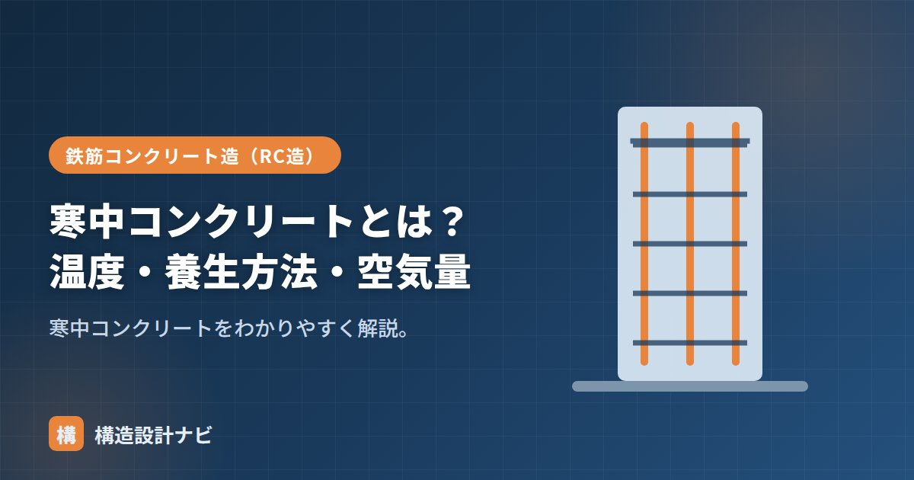

寒中コンクリートとは？温度・養生方法・空気量

寒中コンクリートとは、気温が低い時期に、コンクリートが凍結して品質低下（初期凍害）を起こさないよう特別な配慮をして施工するコンクリートのことです。冬季の現場で特別な種類のコンクリートを使うというより、水セメント比・打込み温度・養生方法・空気量など、施工計画全体を低温向けに調整して品質を確保する、という考え方が基本になります。
- 日平均気温4℃以下が予想される時期に適用。目的は初期凍害の防止。
- 水セメント比60%以下・打込み温度の確保・保温や給熱による養生が基本対策。
- 空気量をやや多めに設定し、凍結融解への抵抗性を高める。
意味と適用
JASS5では、打込み後の養生期間に日平均気温が4℃以下になることが予想される場合に、寒中コンクリートとして扱います。固まる前のコンクリートが凍ると、内部の水が凍結膨張して組織が壊れ、強度が著しく低下します（初期凍害）。適用の判断は、実際の気温だけでなく、施工箇所が屋外か屋内か、日射の有無なども加味して総合的に行います。
初期凍害のメカニズム
コンクリートは、セメントと水が反応する水和反応によって徐々に強度を発現していきます。ところが、この反応がまだ十分に進んでいない段階で凍結すると、コンクリート中の水分が氷に変わる際に体積が約9%膨張し、内部の組織（セメントペーストと骨材の結合）を内側から破壊してしまいます。一度破壊された組織は、その後気温が上がって融解しても強度が回復せず、ひび割れ・強度不足・耐久性の低下として残ってしまうのが初期凍害の恐ろしさです。
水セメント比
耐久性と初期凍害防止のため、水セメント比は60%以下を目安とします。余分な水を減らすことで凍結の影響を抑えます。水セメント比を下げると強度発現も速くなるため、凍結の危険がある期間をできるだけ短くする効果もあります。
温度の管理
- 練混ぜ・打込み温度を確保するため、水や骨材を加熱する（セメントは直接加熱しない）。
- 打込み時のコンクリート温度を一定以上に保つ。
養生方法
初期養生で、コンクリートが所定の強度（おおむね5N/mm²程度）に達するまで凍結させないことが最重要です。保温養生（シート・断熱材で覆う）や給熱養生（ジェットヒーターなどで加温）を行います。保温養生は外気の冷たさを遮断する受動的な方法、給熱養生は積極的に熱を加える能動的な方法で、気温が特に低い場合や大きな部材でない場合は、両方を組み合わせて使うこともあります。
空気量
凍結融解への抵抗性を高めるため、AE剤による空気量はやや多め（4.5〜5.5%程度）に設定します。連行空気が、凍結時の膨張を逃がすクッションの役割をします。空気量が不足すると、完成後の建物が季節ごとに凍結・融解を繰り返す環境（寒冷地の屋外部材など）で、長期的な耐久性が損なわれるおそれがあります。
暑中コンクリートとの違い
寒中コンクリートは低温による凍結を防ぐのが目的ですが、対極にある暑中コンクリートは、高温による急激な水分蒸発・コールドジョイントを防ぐのが目的です。どちらも「気温対策」という点は共通しますが、注意すべき現象と対策の方向性は正反対なので混同しないようにしましょう。
暑い時期の「暑中コンクリート」、初期強度が高い「早強コンクリート」、硬化を早める方法は「コンクリートの硬化を早めるには」、全体像は「コンクリートの種類7選」をどうぞ。
冬場の現場に立ち会うときは、コンクリート温度を測るだけでなく養生シートの重なりや隙間まで見て回ります。保温養生は一見しっかり覆えているように見えても、風でめくれた角の部分だけ局所的に凍結していた例を経験しました。
初期凍害のメカニズム（図解）
寒中コンクリートの対策
| 段階 | 対策 | 基準・目安 |
|---|---|---|
| 材料 | 早強セメントの使用、練混ぜ水・骨材の加温 | 打込み時のコンクリート温度 5〜20℃ |
| 配合 | 水セメント比を下げる、AE剤で空気量を確保 | W/C 60%以下、空気量 4〜6% |
| 打込み | 凍結した地盤・型枠・鉄筋に接して打たない | 接触面の温度も確認 |
| 養生 | 保温養生（シート・断熱材）、給熱養生（ヒーター） | 初期養生中は5℃以上を保つ |
| 強度確認 | 圧縮強度5N/mm²を得るまで凍結させない | この強度に達すれば初期凍害を受けにくい |
寒中コンクリートでAE剤による空気量の確保が重要なのは、硬化後の凍結融解抵抗性のためです。連行された微細な気泡が、内部の水が凍る際の膨張圧を吸収するクッションとして働きます。初期凍害の防止（保温・給熱）と、硬化後の凍結融解対策（空気量）は別の話であり、両方の対策が必要になります。
よくある質問
Q1. 初期凍害を受けたかどうかはどう判断しますか？
外観と強度で判断します。表面がぼろぼろに崩れる、ひび割れが多数生じる、といった外観の異常があれば初期凍害が疑われます。ただし内部の損傷は外から見えないため、供試体の強度が想定を大きく下回っている場合や、テストハンマーによる反発度が低い場合は、コアを採取して実際の強度を確認します。強度が回復しないため、判明した場合は撤去・打ち直しが原則です。
Q2. 寒中コンクリートで型枠はいつ外せますか？
所定の圧縮強度を確認してからです。気温が低いと強度発現が遅れるため、通常の材齢による判断は使えません。現場封かん養生または現場水中養生の供試体で強度を確認し、せき板であれば5N/mm²以上、支保工であればより高い強度に達していることを確かめます。積算温度による推定も併用されます。
Q3. 暖房を使えば寒中コンクリートの対策は不要ですか？
給熱養生は有効な対策の一つですが、それだけでは不十分です。ジェットヒーターなどで加温する場合、熱風が直接当たる面が急乾燥してひび割れる、加熱範囲と非加熱範囲で温度差が生じる、燃焼排気の二酸化炭素で表面の中性化が進む、といった問題があります。保温（断熱材・シート）と組み合わせ、全体を均一に保つことが重要です。
まとめ
- 寒中コンクリートは日平均気温4℃以下で適用。初期凍害の防止が目的。
- 凍結すると内部の水が膨張し組織が破壊され、強度が回復しない。
- 水セメント比は60%以下。水・骨材を加熱し打込み温度を確保する。
- 保温・給熱養生で凍結させず所定強度まで保つ。空気量はやや多め。